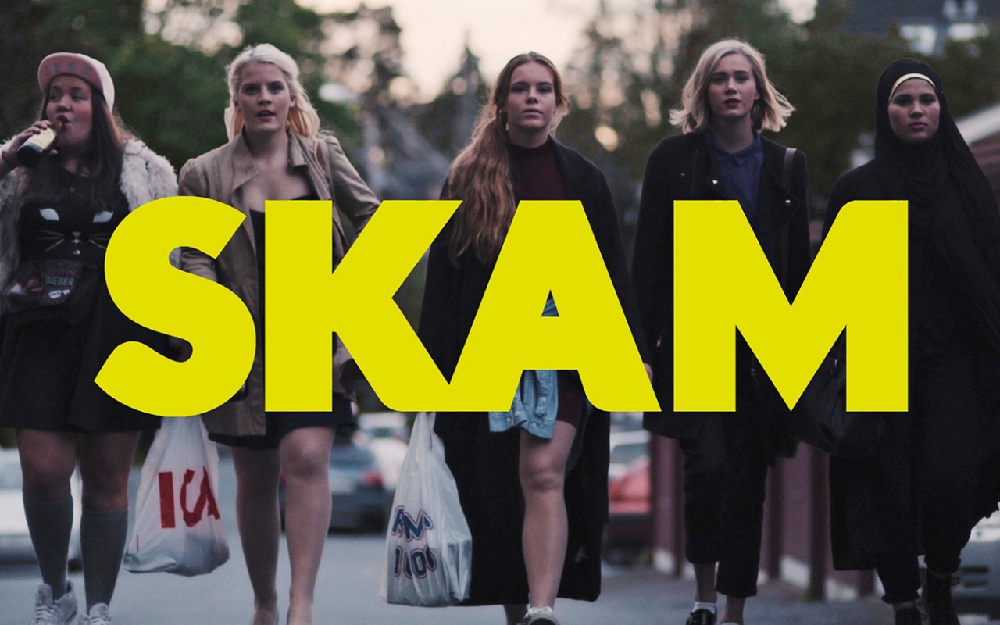

Remakes
WtFock is de Vlaamse versie van SKAM. SKAM komt origineel uit Noorwegen en wordt door veel landen uit Europa nagemaakt. In totaal zijn er nu 7 remakes gemaakt. Ze hebben in de grove lijnen allemaal hetzelfde verhaal, maar elk land geeft er zijn eigen draai aan. Zo zijn er versies die al mee seizoenen hebben dat het origineel.
Origineel:
Noorwegen

Imitators:
België
Nederland
Frankrijk
Duitsland

Italië
Verenigde Staten

Spanje